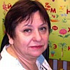

Дошкольное отделение лицея № 1574
В 2015 году 30% первоклассников Лицея № 1574 пришли из дошкольного отделения.
- 1-я Миусская улица, 18
- улица Фадеева, 2с2
- улица Малая Дмитровка, 23/15с3
Воспитатели
Воспитатели, которых чаще всего благодарят родители (отзывы и профили сотрудников взяты с официального сайта школы):|
Старший воспитатель
Олейник Екатерина Анатольевна
6 благодарностей |
 Воспитатель
Волкова Наталья Александровна
Воспитатель
Волкова Наталья Александровна
3 благодарности |
Воспитатель
Маныч Елена Викторовна
3 благодарности |

Логопед
Зелинская Галина Павловна
2 благодарности |
|
Воспитатель
Колодеева Анна Васильевна
2 благодарности |
Психолог
Кривицкая Виктория Сергеевна
2 благодарности |
Воспитатель
Иванова Татьяна Дмитриевна
1 благодарность |
Воспитатель
Медова Наталья Витальевна
1 благодарность |
|
Старший воспитатель
Егорова Тамара Михайловна
1 благодарность |
Отзывы
Данные собраны c официального сайта школы и через форму для отзывов.
Хочу выразить огромную благодарность всем сотрудникам подразделения дошкольного образования в Оружейном переулке, д.25 1а, в особенности Екатерине Анатольевне Олейник, Неле Рястямовне Шариповой и Вере Игоревне за профессионализм, материнскую любовь и бережное отношение к детям, доброту и заботу. И конечно же Наталье Михайловне Гордеевой - за чуткое руководство, сохранение и приумножение ценностей и традиций.
Весь детский сад - это большая, гостеприимная семья с теплой, дружелюбной атмосферой, та семья, из которой так не хочется уходить. Спасибо!
Весь детский сад - это большая, гостеприимная семья с теплой, дружелюбной атмосферой, та семья, из которой так не хочется уходить. Спасибо!
Хочу выразить огромную благодарность коллективу детского сада 1951 (бывший 513). Знаем этот детский сад не понаслышке. Еще мой муж ходил в этот замечательный детский сад. И до сих пор вспоминает с теплотой о воспитательнице Тамаре Михайловне ( сейчас она заведующая в этом саду). По стопам папы пошла и наша дочь. С большим удовольствием она ходила в сад . Хочется поблагодарить наших воспитателей Татьяну Дмитриевну и Наталью Витальевну. Это очень добрые , ласковые и заботливые воспитатели. К каждому ребенку они находили подход. И мы были очень рады что наш сын 1 сентября 2015 г попал в эти заботливые руки в группу ГКП. За это время он очень многому научился. И все благодаря таким замечательным воспитателям и няне Людмиле Михайловне. И отдельное спасибо руководителю подразделнния Гордеевой Наталье Михайловне.
Моя дочь второй год посещает дошкольное подразделение на ул. Малая Дмитровка. Я довольна абсолютно всем, что хочу поделиться информацией...может быть кому-то будет полезна. Все сотрудники очень отзывчивые и делают все, чтобы ребенок привык и полюбил садик, т.е. адаптацияу нас прошла безболезненно, а нам было 2,8. Деток приучают быть дружной группой и конфликтов не случалось. Кормят хорошо, учитывают если ребенок аллергик, перед сном сказки читают, проводятся различные занятия (лепка, аппликация, даже мини дискотеки)). Проводятся занятия по физкультуре и музыкальные занятия. Есть дополнительные кружки по желанию (английский, хореография, что-то еще). Если некогда водить, то замечательно- забрал из сада, а ребенок уже на кружке побывал. Площадка хорошо оборудована. Даже когда ветер сильный, там тихо и спокойно. Утренники бесподобные. Дети прямо как артисты, причем все учат в саду (на дом заданий не дают - для родителей сюрприз). Даже заранее боюсь как дочь будет скучать, когда надо будет идти в школу. Детки знают всех работников по имени, даже воспитателей и детей из других групп, повара, директора, охранников, педагогов. Моя дочь знает, что если батарейки надо в игрушку вставить, то это к дяде Саше, что если Мишку своего в саду забыла, то дядя Женя его охраняет)), что медсестра Елена Вячеславовна печенье дает вместо уколов и звезда утренников))). Видно, что садик живет одной большой дружной семьей. Воспитатель Анна Васильевна и нянечка Мария Михайловна умело учитывают особенности каждого ребенка, они же первые друзья для всех деток, при этом дисциплина всегда на должном уровне.
Хочу от души поблагодарить весь коллектив ОП-4, ведь благодаря вашему профессионализму у нас растут замечательные, воспитанные дети!
Вложенный файл
Хочу от души поблагодарить весь коллектив ОП-4, ведь благодаря вашему профессионализму у нас растут замечательные, воспитанные дети!
Вложенный файл
Детским садиком 1951 на Оружейном пер. очень довольны! Старшая дочь посещала этот садик. Праздники, походы в библиотеку и музей, всевозможные творческие занятия, танцы и бассейн до сих пор вспоминает все с теплотой! Теперь и средний сын ходит. Младшего тоже, без сомнений, планируем отдать в этот садик! Домашняя атмосфера! Добрый, заботливый коллектив! А посещение детских утренников приносит радость и умиление родителям! Выражаем огромную благодарность всем работникам садика! Спасибо Татьяне Евгеньевне, Галине Павловне, Нелли Растямовне, Екатерине Анатольевне, Вере Игоревне, Наталье Александровне и замечательному руководителю Наталие Михайловне!
Садик 1951 мы с дочкой очень любим. Сейчас она во 2 группе, воспитатель Волкова Наталья Александровна, нянечка Анна Евгеньевна. Хочу сказать огромное спасибо им обеим за душевное отношение к детям. Дочка с большим удовольствием ходит в сад. Также хочу поблагодарить Нелли Растямовну, Елену Викторовну и Веру Игоревну, к которым дочь ходила предыдущие 2 года, они замечательные воспитатели и добрые люди.
С ОП-4 ГБОУ лицея 1574 (бывшим детским садом 1951 в Оружейном переулке) нас связывает давняя дружба. Старшая дочь ходила в это сад и до сих пор вспоминает его с теплотой и благодарностью. Сейчас она успешно учится в школе, но любовь к знаниям и творчеству ей привили именно в саду. Поэтому, когда пришло время идти в сад младшему ребенку наш выбор был очевиден. С первой минуты ребенок ощутил теплую атмосферу и чуткую заботу. Интересные занятия, чуткие воспитатели, вкусная почти домашняя еда - все это создается колоссальным трудом дружного и сплоченного коллектива нашего садика. Каждый сотрудник старается окружить заботой каждого ребенка, который пересекает порог данного заведения. Хочется поблагодарить всех : от поваров и охранников, до воспитателей и руководство сада. Особенную хочу отметить воспитателей младшей 1 группы, которые первыми знакомят ребенка с садиком, помогают ему привыкать к новой жизни. Нелли Растямовна, Екатерина Анатольевна и Вера Игоревна - спасибо вам за ваш талант, доброту и терпение. От всей души хочется поблагодарить Галину Павловну, Татьяну Евгеньевну, Наталью Александровну, Викторию Сергеевну, Елену Викторовну, Наталью Михайловну за помощь в воспитании наших детей.
Если вы нашли ошибку или неточность, пожалуйста, сообщите нам об этом.
Ученик, выпускник или родитель? Оставьте отзыв о детском саде.